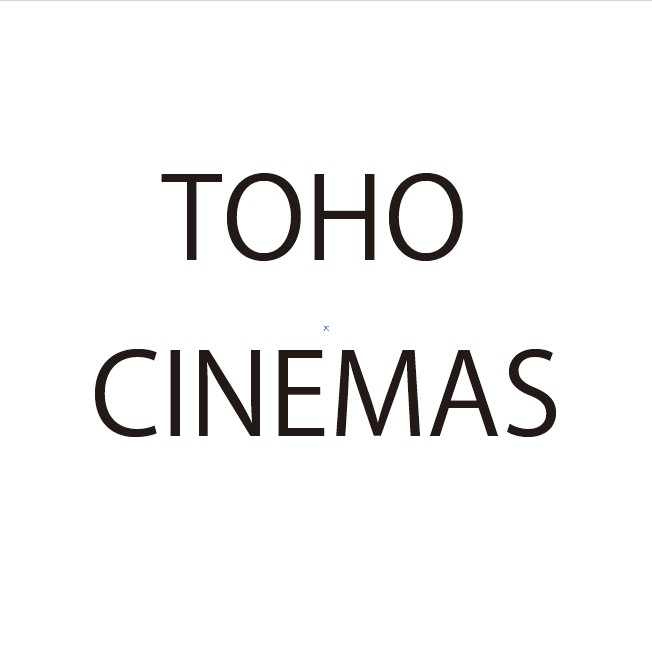
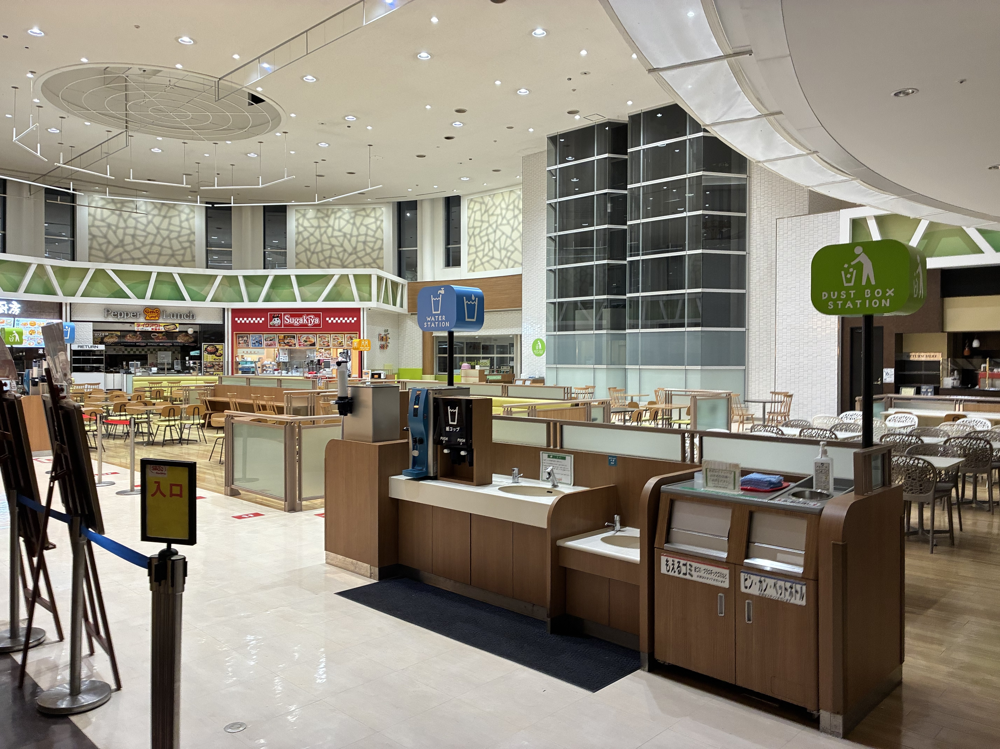

TOHOシネマズ
大迫力の映像と音響や快適な鑑賞環境

笑顔とクルマに会える街
大迫力の映像と音響や快適な鑑賞環境
たくさんの飲食店があり、安らぎの空間

劇場ならではの高品質な映像や臨場感のある音響を楽しめます。
自宅では味わいにくい映画の迫力を体験できるのが魅力です。

さまざまなジャンルの料理を一度に楽しめる、魅力あふれるグルメスポットです。
ラーメンや丼もの、ファストフードなど、豊富なメニューからその日の気分に合わせて好きな料理を選ぶことができます。
友人や家族とそれぞれ好きなものを食べながら、気軽に楽しい食事の時間を過ごせるのが最大の魅力です。